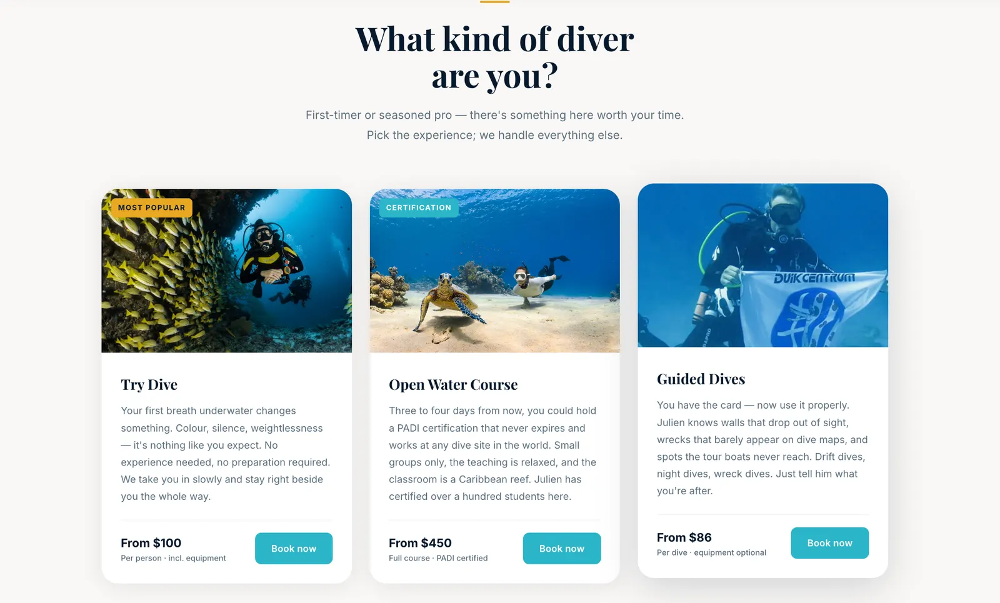

Actief sinds 2011. Nul Google-aanwezigheid. Elke nieuwe gast kwam uitsluitend via mond-tot-mondreclame.
Een school die al meer dan tien jaar gecertificeerde PADI-cursussen verzorgde — lokale instructeurs, een eigen huisrif, een operatie die gasten consequent prezen. Maar als toeristen op het eiland aankwamen en online naar duikcursussen zochten, verscheen deze school niet.
De weinigen die de site vonden, kwamen op een verouderde pagina zonder structuur, geen duidelijk cursusoverzicht en geen reden om vertrouwen te voelen. Eerstejaars — ouders die beginnerscursussen boeken, soloreizigers die hun eerste open water overwegen — moeten zekerheid voelen voordat ze de telefoon pakken. De site bood dat niet.
De opdracht was helder: bouw iets gestructureerds en geloofwaardigs. Niet opvallend — duidelijk. Bezoekers moesten meteen begrijpen welke cursussen beschikbaar zijn, wie de instructeurs zijn en hoe het traject eruitziet van eerste contact tot certificering.
We ontwierpen de site mobile-first, met een heldere hiërarchie en snelle laadtijden. Cursuspagina's zijn kort en direct. Instructeurprofielen gebruiken echte namen en foto's. De toon is rustig en bekwaam — precies wat iemand die zijn eerste duik overweegt wil voelen bij het lezen van een website.
De copy werd in het Engels geschreven met kernonderdelen vertaald naar Papiamentu voor lokale gasten — een klein detail dat iets belangrijks communiceerde: deze school hoort bij dit eiland.
Binnen drie weken na lancering ontving de school haar eerste directe aanvraag van een toerist die de site via Google had gevonden. Voor een operatie die meer dan tien jaar volledig op doorverwijzingen had gedraaid, was dat een betekenisvolle verschuiving.
De nieuwe site gaf de school iets wat ze niet hadden: een professionele eerste indruk die bestand is tegen vergelijking. Mond-tot-mondreclame blijft belangrijk — maar nu is er ergens de moeite waard om mensen naartoe te sturen.